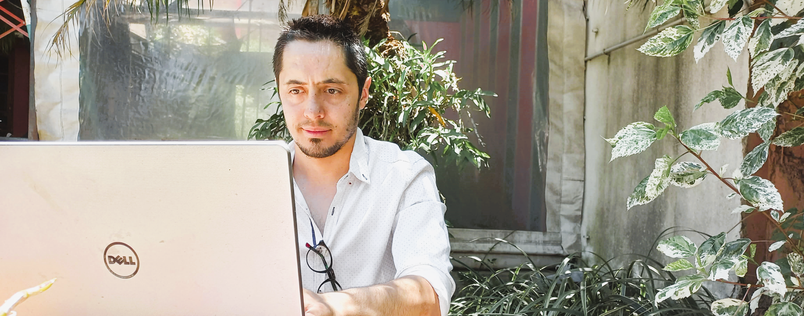
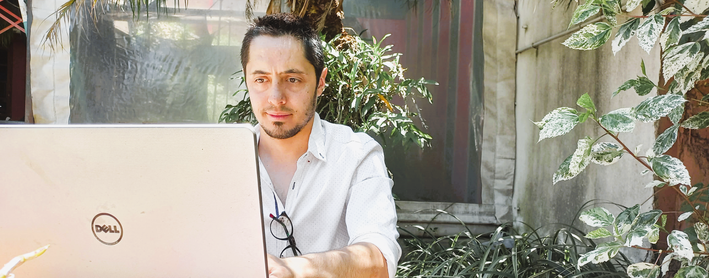

Hi! I’m Manuel
I’m a
FullStack
Developer Jr.
"Forged in the past, excelling in the present: Full Stack Developer ready for the future."
TRADUCRI LO DE ABAJO
The past grants us wisdom and diverse knowledge, but it's the present that defines our passion and purpose. Two and a half years ago, I ventured into the world of programming, and since then, my passion for Full Stack web development has grown exponentially.
TRADUCRI LO DE ABAJO
My background in computer hardware, electrotechnics, and multimedia editing, combined with administrative knowledge in accounting, mathematics, and financial management, has enriched my approach to creating comprehensive technological solutions.
TRADUCRI LO DE ABAJO
Today, as a Full Stack Developer, I'm prepared to take on new challenges, turn ideas into reality, and continue learning on this exciting tech journey. The future awaits us, and together, we can build it.
About this project 🧰: It's a personal project from the ground up, written from scratch in JavaScript and some Bootstrap+Icons. No Frameworks. No other third-party resources
All the technologies that were applied are listed in every page of the site. With this link you can check the Github repository😁. Enjoy it!
These are the technologies I use!
Languages - Databases:
JavaScript - Typescript - Sass - HTML - Angular - Node.js - Java - Git - SQL- MongoDB - MySQL
🎨Design Tools:
Figma - Pixlr - Clipchamp - Movavi - Obs - Audacity
📒Libraries:
Bootstrap - Date-fns - Lodash - Parcel - WebPack - Axios - Await-to-js
-
Mongoose - Bootswatch - ngx-bootstrap - nodemon - morgan -Cors - Express.
⚒️Others:
GitHub - SCRUM - Heroku - Googe Cloud - Vs Code - IntelliJ IDEA - Netlify - StackBlitz
Follow me on